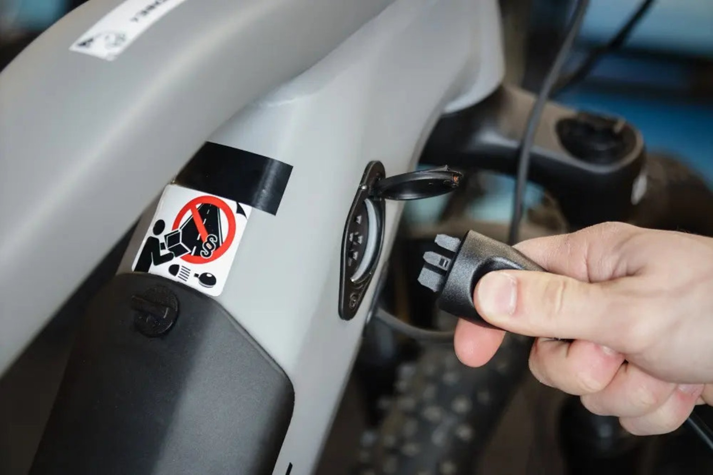

Use the correct charger
Use only the charger supplied with the product or one approved by its manufacturer.
E-BIKES • E-SCOOTERS • LITHIUM-ION BATTERIES
Lithium-ion batteries power many e-bikes and e-scooters. When batteries or chargers are damaged, faulty or used incorrectly, they can cause an intense and fast-moving fire.
If a battery is smoking, hissing or on fire, leave the building immediately and call 999.

Use only the charger supplied with the product or one approved by its manufacturer.
Never charge or store an e-bike or e-scooter in a hallway, doorway or stairwell.
Do not leave a battery charging while you are asleep or away from home.
KNOW THE RISKS
A damaged or faulty lithium-ion battery can overheat and release intense heat, flames and toxic smoke. One failing battery cell may cause others to fail, allowing the fire to spread rapidly.
A battery fire can intensify within seconds and may reignite after appearing to go out.
Smoke and gases from a battery fire can be extremely dangerous if inhaled.
A device charging in a hallway or by a door may prevent you from escaping safely.
Get everyone out, close doors behind you where possible, stay outside and call 999.
SAFE CHARGING
Simple charging habits can significantly reduce the risk of a fire.
Read and follow the manufacturer’s guidance for charging, storage and maintenance.
Never use a charger that is damaged, makes unusual noises or was not designed for the battery.
Keep batteries and chargers away from beds, sofas, carpets, curtains and other combustible materials.
Avoid daisy-chaining extension leads and make sure plugs, cables and sockets are in good condition.
Disconnect the charger when the battery has finished charging, unless the manufacturer specifically advises otherwise.
Make sure your home has working smoke alarms on every level and test them regularly.
SPOT THE WARNING SIGNS
A battery may show signs of failure before a fire starts. Do not ignore any unusual change.
The battery or charger feels much hotter than normal during use or charging.
Look for swelling, bulging, cracking, leaking or other visible damage.
A strong or unfamiliar chemical smell may indicate that a battery is failing.
Hissing, popping or cracking sounds should never be ignored.
Move away immediately, warn others, leave the building and call 999.
Stop using a battery that will not charge correctly or loses power unusually quickly.
Do not attempt to open, modify or repair a damaged battery yourself.
BUY SAFELY
Poor-quality, counterfeit or incompatible batteries and chargers may not include suitable safety features.
STORE SAFELY
Store e-bikes, e-scooters, batteries and chargers in a cool, dry place away from direct sunlight and combustible materials.
SAFE DISPOSAL
Batteries can be crushed or damaged during waste collection and processing, causing fires in bins, vehicles and recycling centres.
Contact your local authority or an appropriate battery recycling service for disposal advice.
Do not place lithium-ion batteries in household waste or mixed recycling.
Tell recycling staff if a battery is swollen, leaking, damaged or has been involved in a fire.
FINAL SAFETY CHECK
Use this quick checklist every time you connect your e-bike or e-scooter battery.
IN AN EMERGENCY